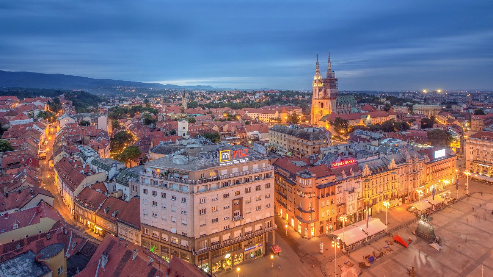

Zagrzeb

Zagrzeb jest stolicą Chorwacji i jej największym miastem. Położony jest w północno-zachodniej części kraju, u podnóża masywu górskiego Medvednica. Miasto jest ważnym ośrodkiem kulturalnym, naukowym i gospodarczym Chorwacji.

Zagrzeb jest stolicą Chorwacji i jej największym miastem. Położony jest w północno-zachodniej części kraju, u podnóża masywu górskiego Medvednica. Miasto jest ważnym ośrodkiem kulturalnym, naukowym i gospodarczym Chorwacji.